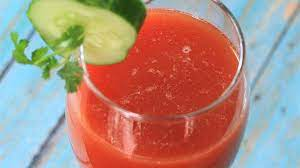

Tomato Juice

Description
Tomato juice is a juice made from tomatoes, usually used as a beverage, either plain or in cocktails such as a Bloody Mary, a Caesar, or Michelada.
Ingredients
- Tomatoes
- Sugar
- Salt
- Water
Steps
- Blend 2 cups water, tomato paste, lemon juice, sugar, and salt together in a blender until smooth; pour into a 1/2 gallon container. Stir 3 cups water into mixture. Refrigerate until thickened, about 1 hour. Add 1 more cup water if juice is too thick.
GoToMainMenu